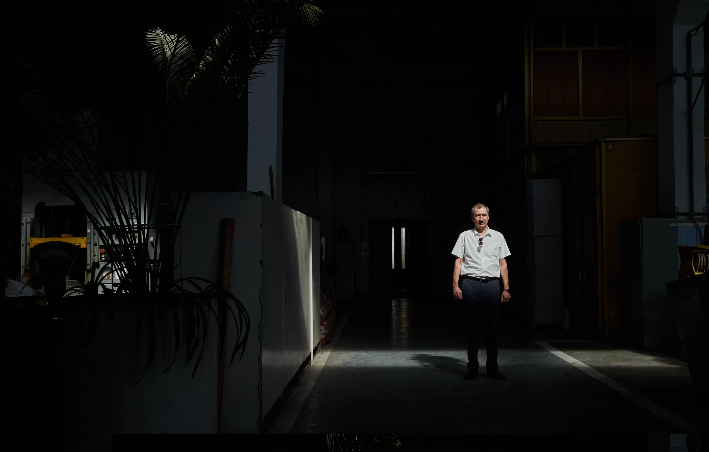
Resistance of superhard materials
09.05.23
National Ukrainian Science Academy’s V. Bakul Institute for Superhard Materials became one of the targets of Russian aggression. In March, they didn’t hesitate to spend an expensive cruise missile on it. Given that the Institute’s area is 15 hectares, this is not the case when the “super accurate” weapon missed its target. Besides that, Russians also used loitering munitions, though the attacks damaged only the walls and the roof of one of the buildings, a high-voltage cable, and many windows. Why such attention to this institution and how it fares in war times? These were our questions when we were arranging a conversation with the director of the Institute, academician Volodymyr Turkevych.
From the outside, the Institute looks like a typical giant of Soviet industry. This vast area has forty buildings, marked by its own toponyms for convenience (the streets are named after prominent workers of the institution). The buildings are damaged not only by warfare but also by the post-soviet crisis, though bustling with activity on the inside.
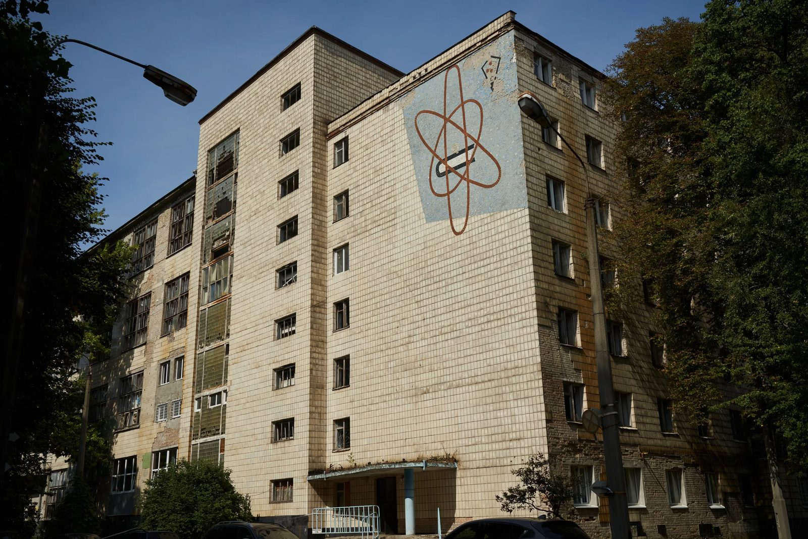
First, I asked the academician to tell me about the history of the Institute.
Diamond is the hardest known mineral on Earth. This feature is very useful for industry, so scientists wanted to synthesize artificial diamonds.
Professionals from the Sweden company ASEA were first to manage it, in 1953, but they didn’t go all the way to get a patent. Two years later, Americans from General Electrics patented the technology of synthesizing diamonds. In it, they referred to an article from 1939 by a Ukrainian scientist Oleksandr Leypunsky, published in the Successes of Chemistry journal; in it, he modeled three ways to synthesize diamonds.
A Soviet scientist Leonid Vereshchagin recreated this American technology in Moscow in 1960, and the Americans sued him for patent infringement. The International Court pointed out that the patent refers to the article by Leypunsky and made the Americans sign a settlement.
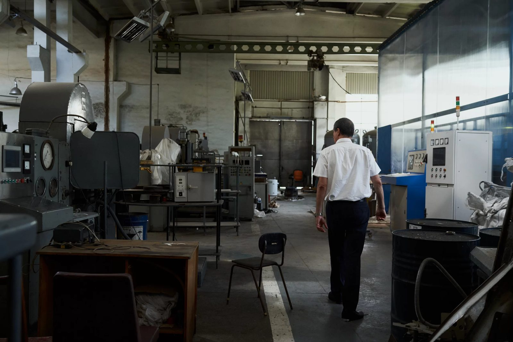
Valentyn Bakul, an industrialist and a scientist from Kharkiv, was at that moment a director of a manufacturing facility that produced cemented carbide products (tungsten cobalt carbide), that were used for mining operations. At the beginning of the 1960s, he transferred his facility from Kharkiv to Priorka in Kyiv; when he found out about the breakthrough of Vereshchagin, he decided immediately to upgrade his manufacture from cemented carbides to superhard materials. He invited Vereshchagin to Kyiv and lobbied the Party to allocate 50 million rubles to build the gigantic Institute.
This is how the Ukrainian SSR State Plan Research and Engineering Institute for Synthetic Superhard Materials and Instruments was founded. At first, it was directly subordinate to the Council of Ministers of Soviet Ukraine and was functioning more as a manufacturing facility for superhard materials than as a research institution.
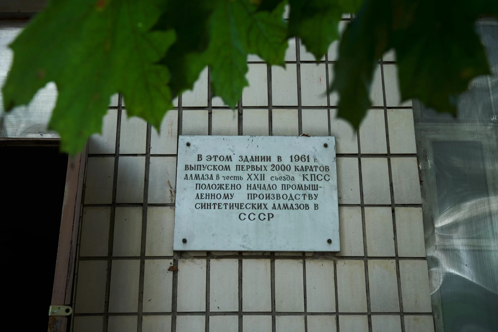
A year after its founding, the Institute manufactured the first batch of 2000 carat of synthetic diamonds, dedicating it to the 22nd Congress of the Communist Party; a memorial plaque that remains on the territory of the Institute as a reminder about its history proudly states this.
Ten years later, in 1972, the Institute was transferred to the Academy of Sciences and renamed the Institute for Superhard Materials. In 1977, Mykola Novikov became its director, reorienting the institution more on research and significantly increasing the number of employees with scientific degrees, but continuing to maintain the production line.
In Soviet times, the Institute employed 900 people, and its manufacturing plant employed 2500. Besides that, there was the Special Design and Technological Bureau, which also employed 900 people. After the collapse of the USSR, the market for the plant’s production shrank significantly, the Design Bureau was closed, the Institute was reduced to 350 employees, and the plant was turned into 10 smaller enterprises that work with its technologies. But the third director of the Institute, academician Volodymyr Turkevych, tries to maintain its scientific potential.
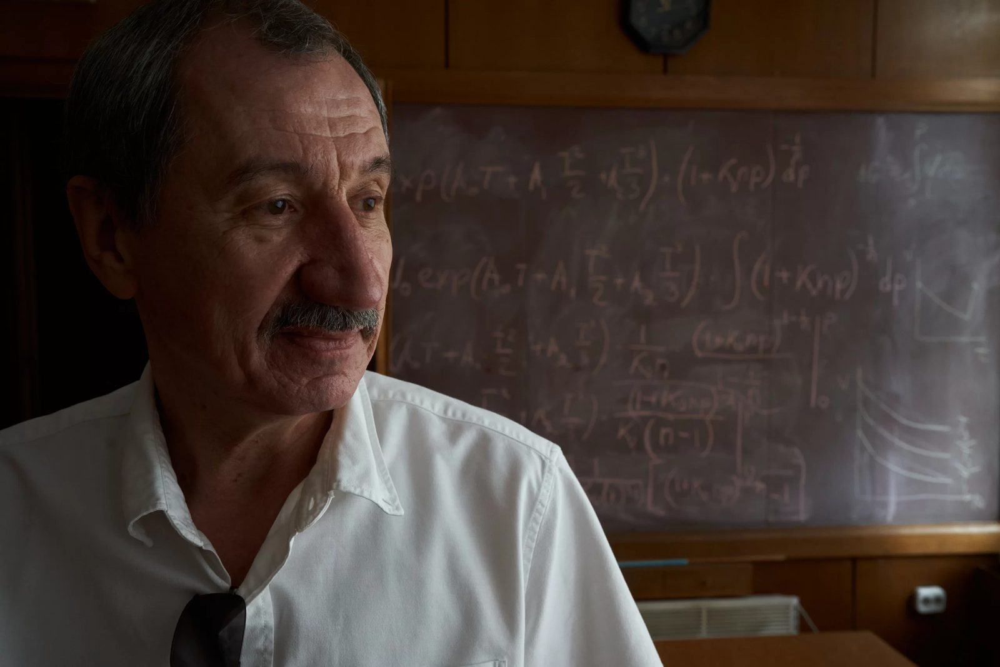
During the more than 60 years of its existence, the Institue was continually developing its technologies. Here, they’ve learned to grow big diamond crystals (up to 10 mm). The scientists also learned to produce the second-hardest material – cubic boron nitride.
The hardness of steel is two to five gigapascal (GPa), and the hardness of a diamond is 100 GPa. But you can’t use a diamond to cut black metals, as it starts to react with them while heating and wears out. This is where cubic boron nitrite can be of use; its hardness is 60 GPa and it perfectly cuts cast iron, steel, and nickel superalloys.
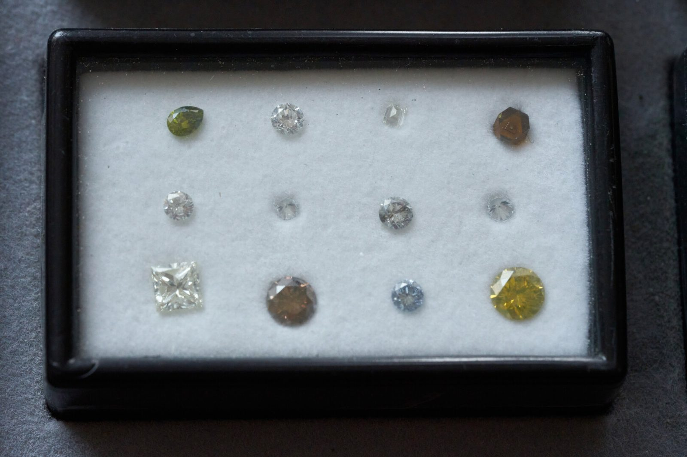
The Institute develops not just materials, but also technologies for their manufacturing, like high-pressure equipment. This scientific work is the core source of profit for the Institute. These technologies were sold to eight countries.
The pressure inside a car tire is two atmospheres, in a propane cylinder - forty atmospheres, in a canon during the shot - 2000 atmospheres. But you need 50 to 80 thousand atmospheres to create an artificial diamond.
Superhard materials are used not just for making equipment; they are also useful for the electronics and military industry.
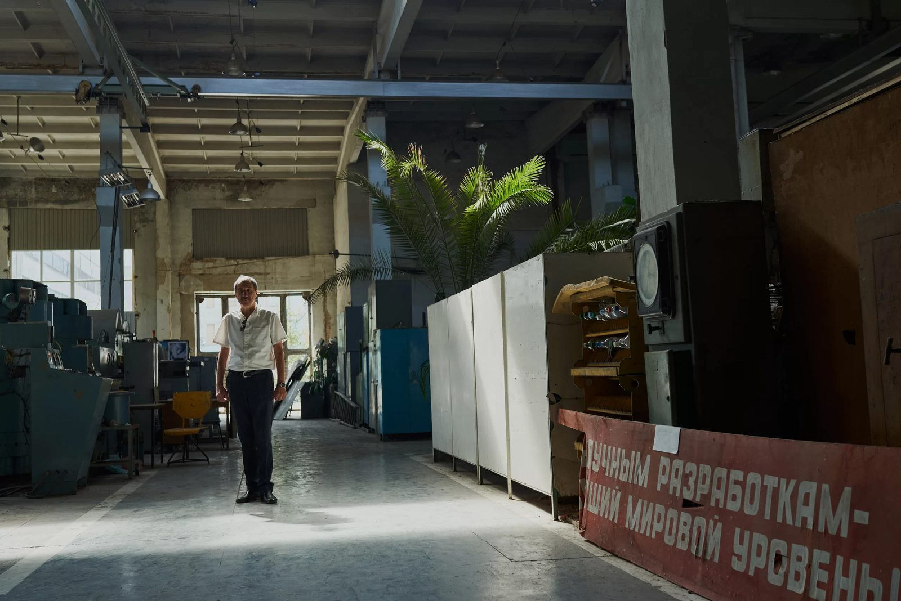
The academician Turkevych doesn’t hide it: “The Institute was always strongly connected to the military. A part of our employees used to have a security clearance, and this is still true. In Soviet times, I personally visited classified manufacturing facilities near Moscow many times. We have a Classified Records Division. The range of classified developments gets shorter, but there is still a number of developments needed by the military.”
After 2014, they ceased all collaboration with Russia or Belarus, but the Institute keeps working for the Ukrainian military. The scientist told us briefly about ten open developments for the military that were presented to the Presidium of the NASU.
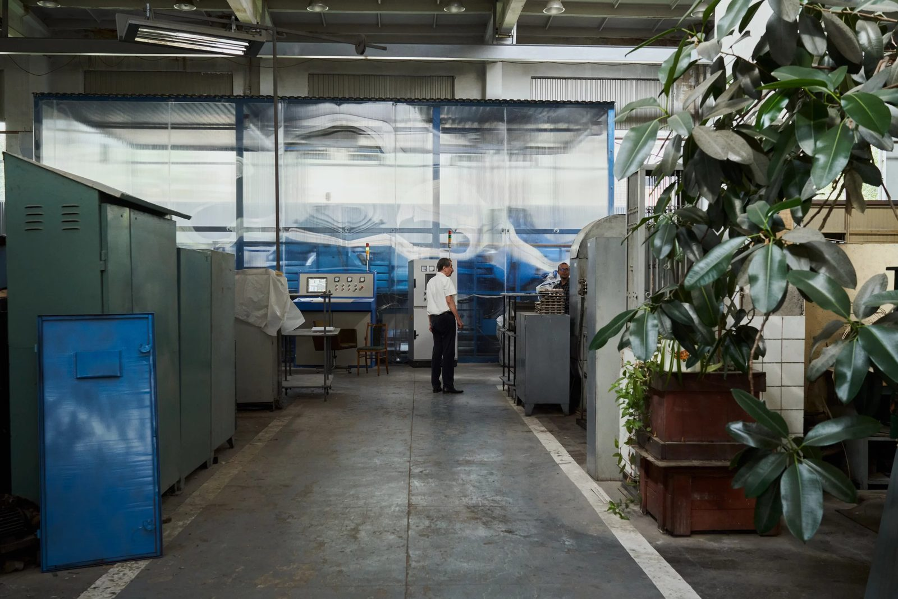
Among them are ceramic-polymer armor plates to protect armored vehicles. Standard protection of an APC (armored personnel carrier) can protect from an armor-piercing bullet of the 7.62 caliber, but a bullet from an anti-materiel rifle or a Vladimirov tank machine gun can pierce it through. Ceramic-polymer armor plates that are developed here can withstand an impact with an energy of more than 30 kJ, that is, they solve this problem, and their weight doesn’t overload the APC.
Another development is a hybrid bearing for a helicopter rotor. Currently, steel bearing is used, and it has to be constantly greased with the help of a machine oil tube. If the tube stops working, the bearing gets jammed, and the helicopter crashes. Ceramic balls made of silicon nitride can work for some time without greasing, which grants the possibility to land the helicopter safely.
The Institute also could have started mass manufacturing of the sixth-class bulletproof vests made of silicon carbide, if the needed equipment were bought and if the production line were launched in time. There is technology and there is space for the production, but there was no funding for this. Earlier, the Institute produced individual armor plates during the Soviet intervention in Afghanistan.
The Russian attack caused two million dollars in damages to the Institute and its manufacturing facilities, but thankfully the equipment stayed intact. The institution has opened accounts for fundraising for repairs and currently was able to replace 20% of the broken windows.
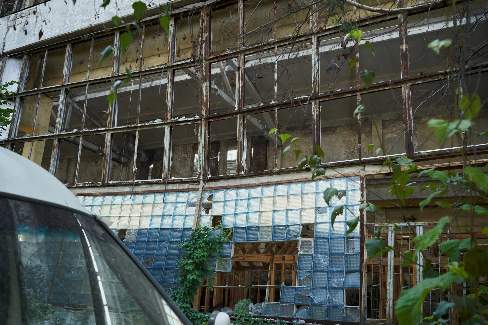
Despite the war, only 14 scientists from the Institute of the 180 are abroad. They work in partner institutions in Poland, Germany, and France, and use their analytical equipment for research done by the Bakul Institute.
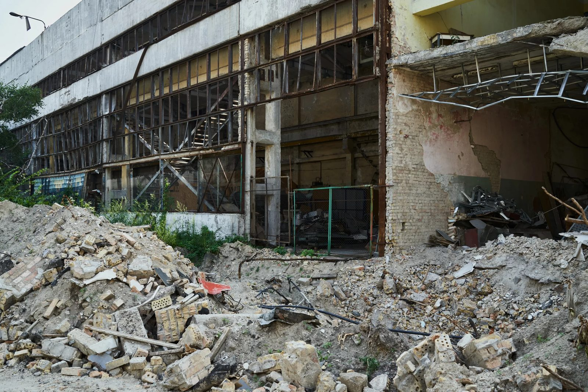
The biggest troubles of the Institute are the shortening of state funding, cuts to state grants, and concerns of the international partners: they aren’t sure if the Institute can fulfill its obligations and report in time in war circumstances. But the director is full of optimism, he tries to persuade the international partners and is looking for new grants.
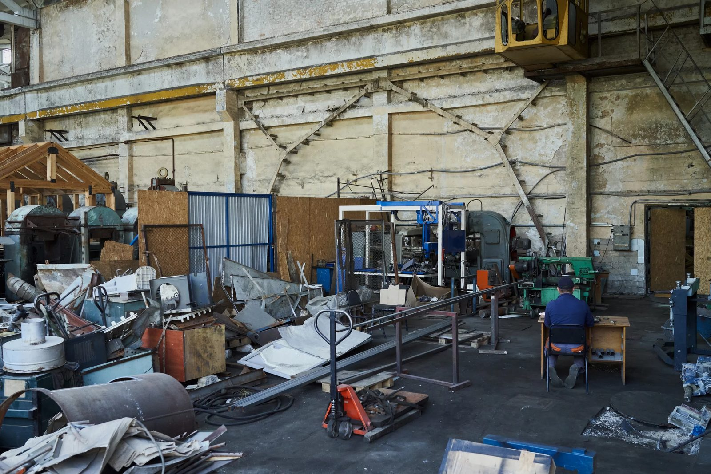
The international role of the institution is evidenced by its own journal “Superhard Materials”, which is indexed by Scopus (is an international database of scientific publications and a tool used to count the number of citations of these publications), translated and spread by the Springer international publisher.
In the end, I asked the director what he would do if he had unlimited funding.
“In applied research, I would concentrate on our ten military technologies, as I don’t believe the war will end soon; we shouldn’t bury our heads in the sand, we should solve the urgent problems. Besides that, processing technologies – cutting, abrasive grinding, deformative stretching, – are always relevant for manufacture in various spheres.
In fundamental research, I would concentrate on developing technology for obtaining monocrystals of gallium nitride, which can be used to manufacture of blue lasers”.
During the interview, the academician Turkevych interrupted our talk, as he was solving at the moment the issue of finding a job for his colleague from Mykolaiv, whose institute has suffered much more, than his.
Despite the war and the attack, the work in the Bakul Institute continues. This institution studies superhard materials, after all.
A series of reports was carried out with the support of the Documenting Ukraine project from the Institut für die Wissenschaften vom Menschen.